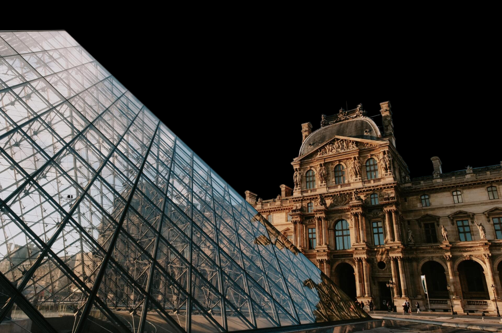
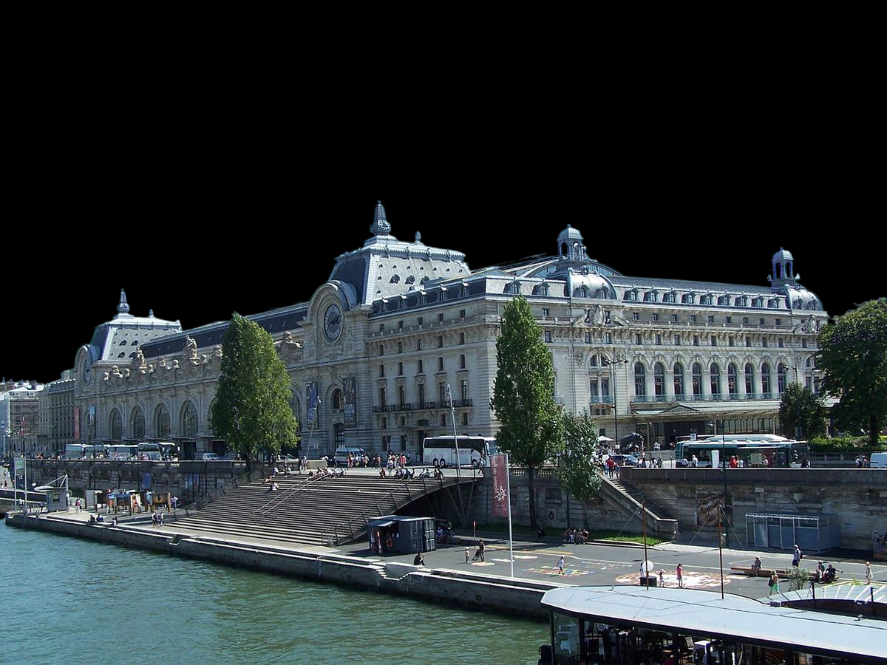
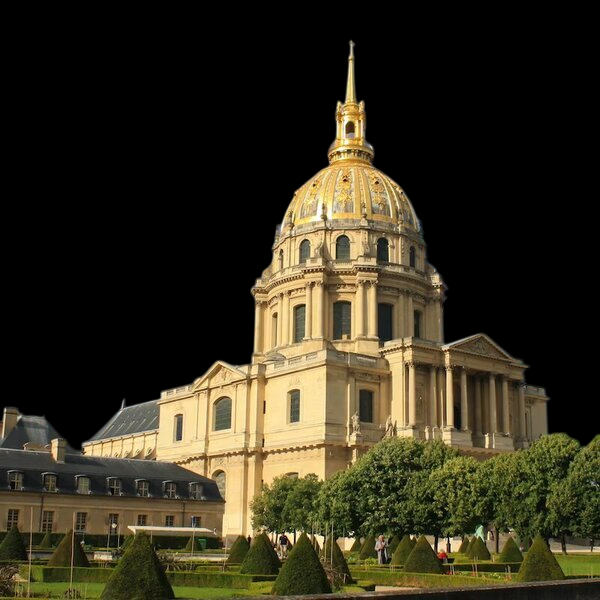
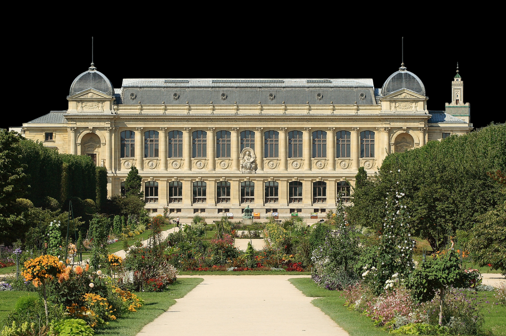
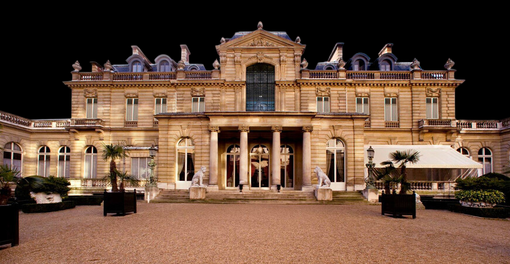
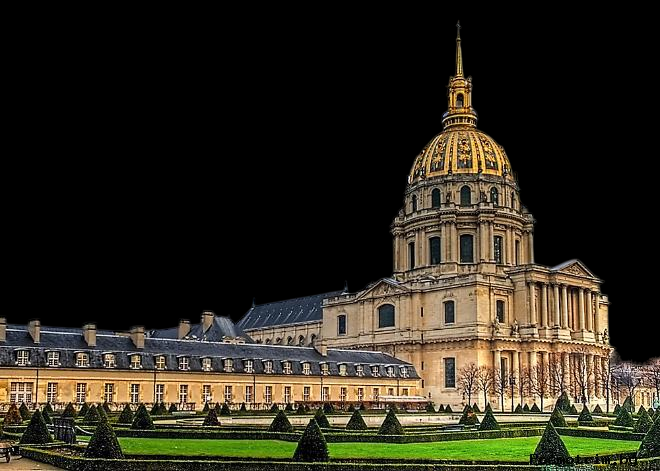
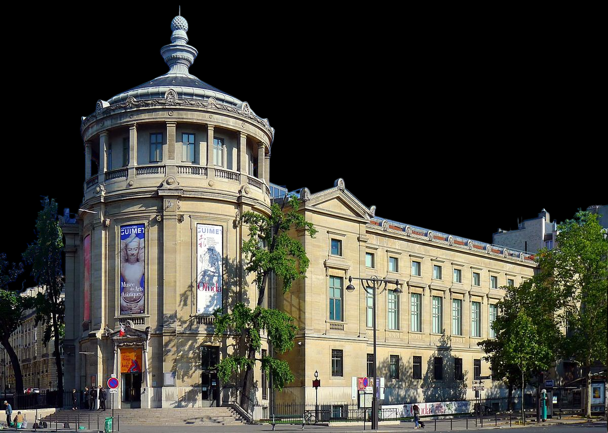

Париж
Известные музеи Парижа
Город Париж давным-давно получил признание у туристов. Сюда съезжаются люди из разных стран мира, чтобы посмотреть на уникальные экспонаты музеев, погулять возле Эйфелевой башни и посмотреть Лувр. Есть много различных поговорок, пословиц и высказываний, связанных с Парижем, перечислять которые мы не станем, так как Вы все их знаете.
Здесь Вы найдете известнейшие музеи Парижа, их описание, расположение на картах, а также можно будет узнать как добраться до того или иного места. Вся информация будет подана очень удобно и расписана в мельчайших подробностях. Каждая ссылка ведет на отдельную новость, так что вам просто следует выбрать понравившийся музей и ознакомится с содержанием статьи. Но не стоит забывать, что Париж - это лишь один город Франции, в которой находится бесчисленное множество уникальных мест.


Лувр
📍Адрес: 75001 Paris, Франция
👨Архитектор: Лемерсье, Лево
🕑Год: 1793
Сравнительно недавно, в середине 80-х годов XX в., когда в знаменитом парижском музее происходили грандиозные реставрационные работы, археологи нашли под его зданиями остатки мощной стены и оборонительного рва начала XIII в. Это были фрагменты хорошо укрепленного замка.
Их тщательно отреставрировали, и теперь, спустившись в нижний этаж, посетители воочию видят часть древней стены. Таким образом, она тоже стала одним из музейных экспонатов. А о том, как менялся и перестраивался Лувр на протяжении веков, можно судить по макетам, показывающим, каким он был в разные периоды.

Музей д'Орсе
📍Адрес: Esplanade Valéry Giscard d'Estaing, 75007 Paris, Франция
👨Архитектор: Гаэ Ауленти, Виктор Лалу, Эмиль Бенар, Люсьен Магне, Пьер Колбок, Жан-Поль Филиппон, Рено Бардон
🕑Год: 1986
Сколь ни велика слава Эрмитажа или Лувра, но на свете немало и других знаменитых художественных музеев с прекрасными собраниями картин, скульптур и других произведений искусства. Причем один из них находится буквально в двух шагах от Лувра. Чтобы попасть туда, надо перейти по мосту на другой берег Сены и немного пройти по набережной вниз по течению. Напротив сада Тюильри стоит здание музея Орсэ. В нем собраны произведения французского искусства, относящиеся к периоду с середины XIX в. до 1914 г., начала Первой мировой войны.
Но знаменит этот музей не только своим богатейшим собранием. Интересен он и тем, что расположен в здании... бывшего железнодорожного вокзала. Тут своя любопытная история. Вокзал Орсэ построили в конце XIX в. По тем временам это был самый технически передовой из всех парижских вокзалов, оснащенный эскалаторами для багажа и лифтами для пассажиров. Вдобавок это был и самый красивый вокзал — огромный центральный зал со стеклянным куполом украшали фрески и лепнина. Кроме того, в здании вокзала размещался отель на 370 номеров с великолепными ресторанами и залами для приемов. С вокзала Орсэ в Бордо, Нант, Тулузу ежедневно уходило несколько десятков поездов.

Музей ордена Освобождения
📍Адрес: 51 Boulevard de la Tour-Maubourg, 75007
👨Архитектор: Фрэнк Оуэн Гери
🕑Год: 1967
Многие туристы считают Париж культурной столицей, которая богата своими численными галереями и крупнейшими художественными музеями. Однако, печальным является тот факт, что туристы акцентируют свое внимание на самых популярных культурных местах, забывая при этом о том, что где-то рядом, в тихой улочке, находится Музей ордена Освобождения.
Этот музей расположен в одном из исторических зданий города – в Доме Инвалидов, который расположился на тихом бульваре де ла Тур-Мобур. Это – один из немногих военных музеев, которые могут похвастаться своими уникальными экспонатами. Но главной задачей этого музея является, в первую очередь, напомнить всем посетителям о прошлом этой великой страны. Ведь многие просто-напросто пренебрегают историей своего государства, что есть не совсем правильно.

Национальный музей естественной истории
📍Адрес: 57 Rue Cuvier, 75005 Paris, Франция
👨Архитектор: Даниел Хадсон Бёрнем
🕑Год: 1793
Национальный музей естественной истории в Париже представляет собой огромный комплекс с большим количеством заведений расположенных не только в столице Франции, но и за его пределами.
Отличительной особенностью музея является отражение в экспозициях интереса человека к взаимоотношениям его с окружающей средой. Это не только экспозиционная и просветительская деятельность, но и научная, которой занимаются 1800 сотрудников, 500 из них научные работники и исследователи. Образован музей истории в XVII веке с основания Королевского ботанического сада, который сохранил до нашего времени все уникальные деревья и растения и является одним из филиалов комплекса.

Музей Жакмар-Андре
📍Адрес: 158 Bd Haussmann, 75008 Paris, Франция
👨Архитектор: Анри Параном
🕑Год: 1913
В Париже находится музей Жакмар-Андре, который отличается от других музеев Франции весьма значительно. В нем царит покой и уют. Музей создан в доме, где проживали Эдуард Андре и Нели Жакмар. Они были мужем и женой.
Андре родился в семье банкира. Семья была богатая, и поэтому уже с раннего возраста Жакмар Андре стал коллекционировать картины. Он по-настоящему любил искусство. Со своей будущей женой он познакомился, когда она рисовала его портрет. Она была известной художницей достаточно в широких кругах. Все картины, которые супруги привозили из разных стран (преимущественно из Италии – это была их любимая страна, в который они бывали каждый год) выставлялись в доме Андре, расположенном на Бульваре Османа 158. Архитектором данного дома был Анри Паран. Строительство закончилось в 1875 году.

Дом инвалидов
📍Адрес: 75007 Paris, Франция
👨Архитектор: Либералю Брюану
🕑Год: 1671
Парижский Дом инвалидов - один из самых посещаемых музейных комплексов Парижа. Уникальное место, самый пафосный приют для отставных солдат, созданный по приказу Людовика XIV. Королю надоели попрошайки и воры из числа некогда бравых солдат Его Величества. Войн было достаточно, а проблему отставных военных и инвалидов никто не решал.
Как и большинство "проектов" Людовика, Дом инвалидов получился необыкновенным. Капризный король даже архитектора сменил, недовольный декором собора.
Первых жильцов Дом инвалидов принял уже через 4 года, хотя окончательно строительство было закончено только через 30 лет.

Музей восточных искусств (музей Гиме)
📍Адрес: 6 Pl. d'Iéna, 75116 Paris, Франция
👨Архитектор: Альбер Лапорт
🕑Год: 1889
Парижский музей восточных искусств (музей Гиме) основал француз, который интересовался религией других стран. Музей был основан в 1889 году. Находится почти напротив Эйфелевой башни, только на другом берегу Сены. Посетителей встречает великолепная сидящая статуя высотой 5 метров. Она относится к эпохе Кхмерской империи, которая существовала с 9 по 15 вв. и находилась на территории современной Камбоджи.
В конце 19 века Франция отправляла археологов в различные азиатские страны. Все находки в этих стран и составляют основу музея Гиме. Таким образом, музей может похвастаться самым богатым собраниям буддистского искусства как по качеству, так и по количеству.
